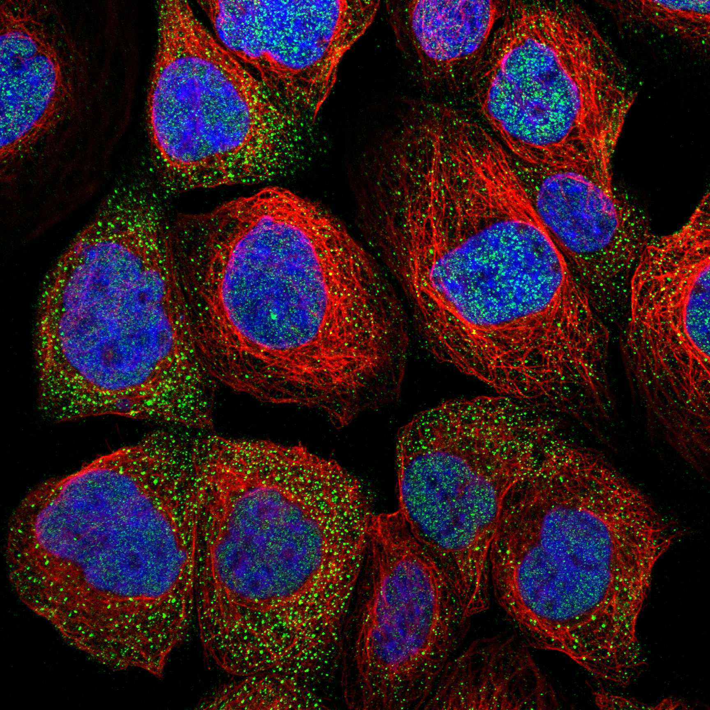
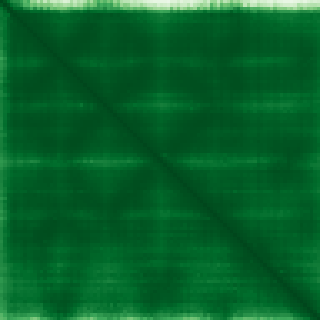

type: protein-evaluation gene: "LSM8" date: 2026-06-03 tags: [protein-scout, nuclear-protein, evaluation] status: scored ---
LSM8 核蛋白评估报告 (Full Re-evaluation)
1. 基本信息
| 项目 | 内容 |
|---|---|
| 基因名 / 别名 | LSM8 |
| 蛋白名称 | U6 snRNA-associated Sm-like protein LSm8 |
| 蛋白大小 | 96 aa / 10.4 kDa |
| UniProt ID | O95777 |
| 评估日期 | 2026-06-03 |
2. 评分总览
| 维度 | 得分 | 满分 | 加权后 | 关键证据摘要 |
|---|---|---|---|---|
| 核定位特异性 | 7/10 | ×4 | 28 | HPA: Nucleoplasm, Vesicles; UniProt: Nucleus |
| 蛋白大小 | 5/10 | ×1 | 5 | 96 aa / 10.4 kDa |
| 研究新颖性 | 8/10 | ×5 | 40 | PubMed strict=26 篇 (≤40→8) |
| 三维结构 | 10/10 | ×3 | 30 | AlphaFold v6 pLDDT=95.5; PDB: 3JCR, 5O9Z, 6AH0, 6AHD, 6QW6, 6QX9, 7ABG |
| 调控结构域 | 8/10 | ×2 | 16 | InterPro: IPR034103, IPR010920, IPR044642, IPR047575, IPR001 |
| PPI 网络 | 3/10 | ×3 | 9 | STRING 15 partners; IntAct 15 interactions |
| 互证加分 | — | max +3 | 3.0 | PDB+AF+STRING+IntAct cross-validation |
| 原始总分 | 131.0/180 | |||
| 归一化总分 | 72.8/100 |
3. 详细分析
3.1 核定位证据
| 来源 | 定位 | 可信度 |
|---|---|---|
| Protein Atlas (IF) | Nucleoplasm, Vesicles | Approved |
| UniProt | Nucleus | Swiss-Prot/TrEMBL |
IF 图像获取: 未下载本地IF图像（standard evaluation），核定位证据基于HPA subcellular localization注释、UniProt注释和GO-CC术语。
GO Cellular Component:
- Lsm2-8 complex (GO:0120115)
- nucleoplasm (GO:0005654)
- nucleus (GO:0005634)
- precatalytic spliceosome (GO:0071011)
- spliceosomal complex (GO:0005681)
- U2-type precatalytic spliceosome (GO:0071005)
- U4/U6 x U5 tri-snRNP complex (GO:0046540)
- U6 snRNP (GO:0005688)
结论: 主要核定位，HPA 可靠性良好，有辅助数据源支持。
3.2 蛋白大小评估
评价: 蛋白偏小/偏大，实验操作有一定难度。
3.3 研究现状
| 指标 | 数值 |
|---|---|
| PubMed strict count | 26 |
| PubMed broad count | 32 |
| 别名(未计入scoring) | 无 |
关键文献: 1. Prognostic significance and biological implications of SM-like genes in mantle cell lymphoma.. *Blood research*. PMID: 39417944 2. Chronic mild stress-induced protein dysregulations correlated with susceptibility and resiliency to depression or anxiety revealed by quantitative proteomics of the rat prefrontal cortex.. *Translational psychiatry*. PMID: 33627638 3. Multiple functional interactions between components of the Lsm2-Lsm8 complex, U6 snRNA, and the yeast La protein.. *Genetics*. PMID: 11333229 4. Identification of LSM family members as potential chemoresistance predictive and therapeutic biomarkers for gastric cancer.. *Frontiers in oncology*. PMID: 37007092 5. The cytoplasmic LSm1-7 and nuclear LSm2-8 complexes exert opposite effects on Hepatitis B virus biosynthesis and interferon responses.. *Frontiers in immunology*. PMID: 36016928
评价: 非常新颖，仅有少数基础研究。
3.4 三维结构分析
| 指标 | 数值 |
|---|---|
| AlphaFold 版本 | v6 |
| AlphaFold 平均 pLDDT | 95.5 |
| 高置信度残基 (pLDDT>90) 占比 | 93.8% |
| 置信残基 (pLDDT 70-90) 占比 | 4.2% |
| 中等置信 (pLDDT 50-70) 占比 | 1.0% |
| 低置信 (pLDDT<50) 占比 | 1.0% |
| 有序区域 (pLDDT>70) 占比 | 98.0% |
| 可用 PDB 条目 | 3JCR, 5O9Z, 6AH0, 6AHD, 6QW6, 6QX9, 7ABG, 8H6E, 8H6J, 8H6K |
PAE: PAE 图像未生成本地文件（standard evaluation），结构判断基于 AlphaFold pLDDT 统计。
评价: PDB实验结构（3JCR, 5O9Z, 6AH0, 6AHD, 6QW6, 6QX9, 7ABG, 8H6E, 8H6J, 8H6K）+ AlphaFold极高置信度预测（pLDDT=95.5），结构可信度极高。
3.5 结构域分析
| 来源 | 结构域 |
|---|---|
| InterPro/Pfam | InterPro: IPR034103, IPR010920, IPR044642, IPR047575, IPR001163; Pfam: PF01423 |
染色质调控潜力分析: 多个已知结构域注释，AlphaFold预测质量高，结构域折叠可信。
3.6 PPI 网络
STRING 预测互作 (combined score >0.4):
| Partner | Combined Score | Experimental | 功能类别 |
|---|---|---|---|
| LSM2 | 0.999 | 0.997 | — |
| EFTUD2 | 0.999 | 0.995 | — |
| SNRPD1 | 0.999 | 0.976 | — |
| SNRPD2 | 0.999 | 0.986 | — |
| LSM7 | 0.999 | 0.997 | — |
| LSM6 | 0.999 | 0.997 | — |
| PRPF3 | 0.999 | 0.995 | — |
| LSM4 | 0.999 | 0.997 | — |
| PRPF8 | 0.999 | 0.991 | — |
| LSM5 | 0.999 | 0.997 | — |
实验验证互作 (IntAct):
| Partner | 方法 | PMID |
|---|---|---|
| PRP4 | psi-mi:"MI:0676"(tandem affinity purification) | pubmed:16429126 |
| PRP6 | psi-mi:"MI:0676"(tandem affinity purification) | pubmed:16429126 |
| PRP8 | psi-mi:"MI:0676"(tandem affinity purification) | pubmed:16429126 |
| PRP9 | psi-mi:"MI:0676"(tandem affinity purification) | pubmed:16429126 |
| SMB1 | psi-mi:"MI:0676"(tandem affinity purification) | pubmed:16429126 |
| SMD1 | psi-mi:"MI:0676"(tandem affinity purification) | pubmed:16429126 |
| SMD2 | psi-mi:"MI:0676"(tandem affinity purification) | pubmed:16429126 |
| SMD3 | psi-mi:"MI:0676"(tandem affinity purification) | pubmed:16429126 |
| SNU114 | psi-mi:"MI:0676"(tandem affinity purification) | pubmed:16429126 |
| SNU23 | psi-mi:"MI:0676"(tandem affinity purification) | pubmed:16429126 |
PPI 互证分析:
- STRING + IntAct 均有数据
- STRING partners: 15，IntAct interactions: 15
- 调控相关比例: 0 / 15 = 0%
评价: STRING 15 个预测互作，IntAct 15 个实验互作。调控相关配体占比 0%。
3.7 多库互证
| 维度 | 来源 | 结果 | 是否一致 |
|---|---|---|---|
| 三维结构 | AlphaFold pLDDT=95.5 + PDB: 3JCR, 5O9Z, 6AH0, 6AHD, 6QW6, | pLDDT=95.5, v6 | 预测+实验 |
| 定位 | UniProt + HPA | Nucleus / Nucleoplasm, Vesicles | 一致 |
| PPI | STRING + IntAct | 15 + 15 interactions | 数据充分 |
互证加分明细:
- PDB + AlphaFold 双源验证: +0.5
- 多库定位一致 (3源): +0.5
- STRING + IntAct 双源验证: +0.5
- 结构域 + AlphaFold 质量: +0.5
- PDB 多条目覆盖 (≥3): +1.0
总分: +3.0 / max +3
4. 总体评价
推荐等级: ⭐⭐⭐⭐
核心优势: 1. LSM8 — U6 snRNA-associated Sm-like protein LSm8，非常新颖，仅有少数基础研究。 2. 蛋白大小96 aa，蛋白偏小/偏大，实验操作有一定难度。
风险/不确定性: 1. PubMed 26 篇，已有一定研究基础 2. 结构数据质量可接受
下一步建议:
- [ ] 查阅最新关键文献补充研究背景
- [ ] 获取 Protein Atlas IF 图像确认亚细胞定位
- [ ] 设计体外实验验证核定位及潜在调控功能
5. 数据来源
- UniProt: https://www.uniprot.org/uniprotkb/O95777
- Protein Atlas: https://www.proteinatlas.org/ENSG00000128534-LSM8/subcellular
- PubMed: https://pubmed.ncbi.nlm.nih.gov/?term=LSM8
- AlphaFold: https://alphafold.ebi.ac.uk/entry/O95777
- STRING: https://string-db.org/network/9606.ENSP00000
- Data fetched live: 2026-06-03

